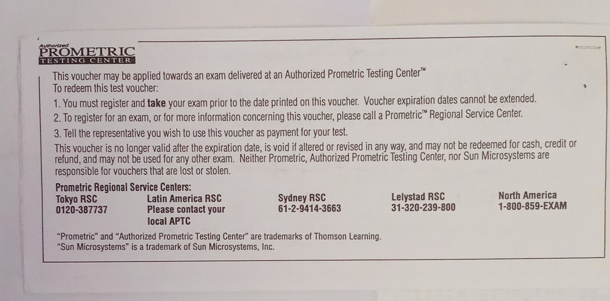
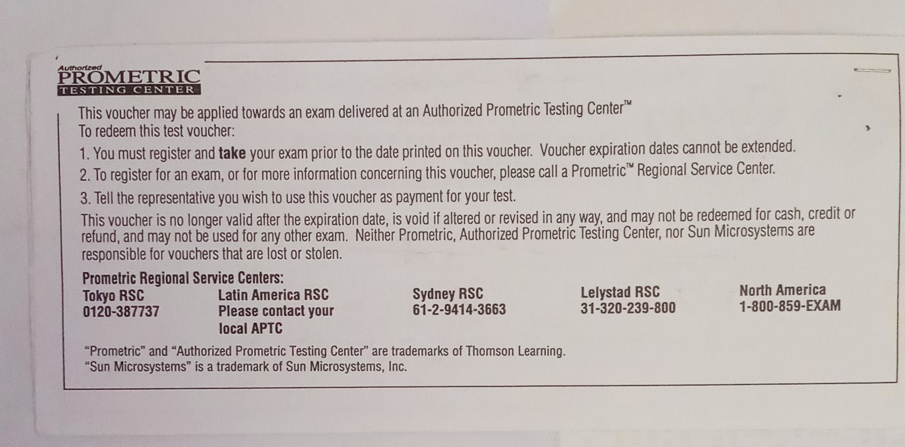
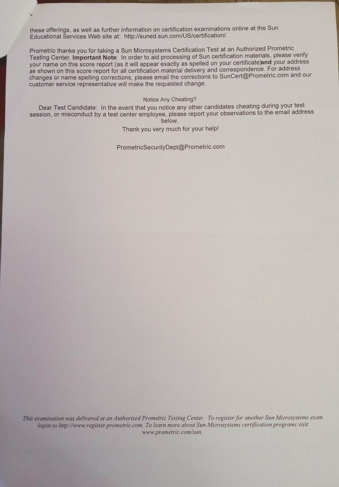
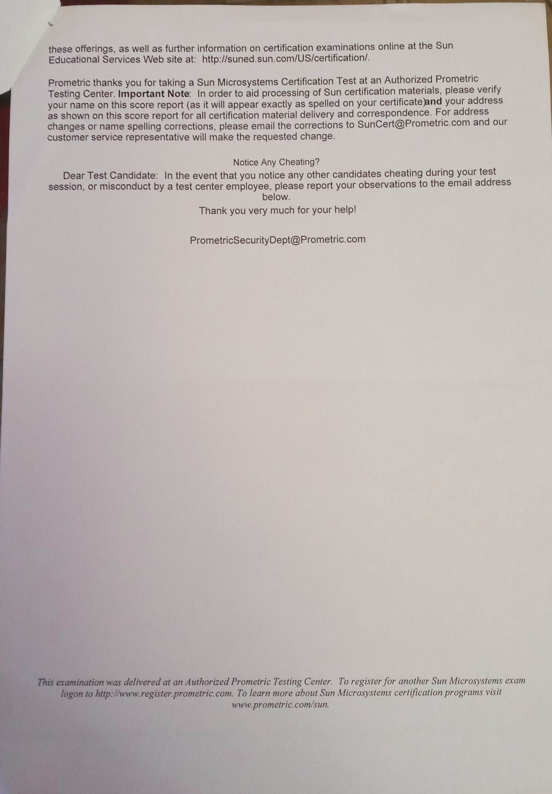

CertificateAside from my university studies, I completed some postgraduate courses/industry certifications. My first investment after university was in Sun Solaris 10. It was a process of several months of preparation, reading books, studying, and assimilating all the features of this system.
 

 


I received the certificate and it meant a great happynes for so much effort: 
I have other certificates in Coursera but these are in my Linkedin. |